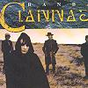

Celtic Lyrics Corner > Artists & Groups > Clannad > Banba > Banba Óir
|  | Banba Óir |
| Credits : | Ciarán Brennan |
| Appears On : | Banba |
| Language : | Gaeilge (Irish Gaelic) |
| Lyrics : | English Translation : |
| Idir dhá láimh daoine fíuntach | Both two hands of noble people |
| Scríobh an agham i mBanba óir | Write the ogham in golden Ireland |
| I nglas béinne fial ó nádúir | In young company, noble of nature |
| Fonn ceoil i mBanba óir | Desire of music in golden Ireland |
| Lios na aileach, draíocht draoitheach | Ring forts of rock, the magic of the druids |
| Tuamaí ríthe i mBanba óir | Tombs of kings in golden Ireland |
| Clochán naofa, cill is caisléain | Holy clochan, churches and castles |
| Truit na gceilteach i mBanba óir | Sound of the Celtic language in golden Ireland |
| Idir dhá láimh i mBanba óir | Both two hands in golden Ireland |
| Fonn ceoil i mBanba óir | Desire of music in golden Ireland |
| Scríobh an agham i mBanba óir | Write the ogham in golden Ireland |
| I mBanba óir | In golden Ireland |